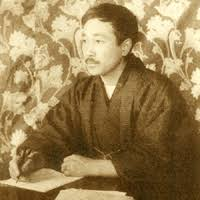
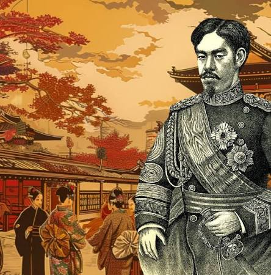
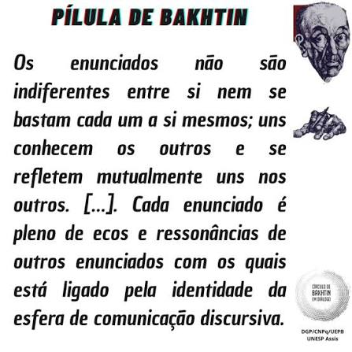

“O osso” de Arishima Takeo
A influência da vida do autor na obra | Orientação: Prof. Leonard Christy Souza Costa e Prof. Rodrygo Yoshiyuki Tanaka

Este projeto de pesquisa PIBIC/UFAM investiga a complexa teia entre a subjetividade de Arishima Takeo e a sua produção literária, focando no conto "O Osso" (Hone). A análise parte da premissa de que a obra literária, sob a ótica bakhtiniana, não é um produto estático, mas um ato responsivo e dialógico. Arishima, imerso nas contradições da Era Taisho, utiliza a literatura para refutar a racionalização excessiva de seu tempo, transpondo suas próprias crises existenciais de classe para o limiar da ficção.
A Subjetividade e o "Romance do Eu"
O gênero Shishōsetsu (Romance do Eu) em Arishima não se limita à confissão autobiográfica ingênua. Através de um projeto estético consciente, o autor utiliza a introspecção como ferramenta de sondagem política. Enquanto o grupo Shirakaba defendia um humanismo idealista, Arishima tensiona essa visão ao inserir seus personagens em um cenário de marginalidade, onde o "Eu" literário busca, na invenção, uma realidade mais autêntica do que a vivida socialmente. Arishima não apenas narra; ele constrói um campo de força onde a consciência do autor e a voz do personagem colidem constantemente.

Signos, Ideologia e o Cronotopo
A pesquisa detalha a função semiótica de elementos cotidianos em "O Osso", como o consumo do Takuanzuke e do Sake. Mais do que meros objetos, eles operam como signos de resistência à ideologia da "eficiência econômica" de Morimoto Atsukichi. Analisamos, ainda, a aplicação do conceito de cronotopo bakhtiniano, onde tempo e espaço se fundem para criar um cenário de "limiar" — o lugar de encontro entre a angústia da sobrevivência e a busca por um propósito ético e estético que desafia as estruturas impostas na obra.
Perspectiva Bakhtiniana em "O Osso"

A análise dialógica aplicada ao conto "O Osso" permite compreender a polifonia entre a biografia de Arishima e a estrutura narrativa da obra.